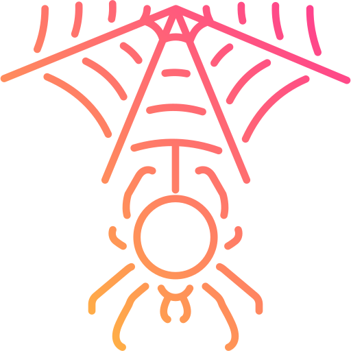

<mat-toolbar class="mat-elevation-z8">
  <button mat-icon-button *ngIf="sidenav.mode === 'over'" (click)="sidenav.toggle()">
      <mat-icon *ngIf="!sidenav.opened">
          menu
      </mat-icon>
      <mat-icon *ngIf="sidenav.opened">
          close
      </mat-icon>
  </button>
  SPIDER System
</mat-toolbar>
  
<mat-sidenav-container>
    <mat-sidenav #sidenav="matSidenav" class="mat-elevation-z8">
        <!-- <div>Icons made by <a href="" title="Triangle Squad">Triangle Squad</a> from <a href="https://www.flaticon.com/" title="Flaticon">www.flaticon.com</a></div>   -->
        
        <h4 class="name">SFC Management Tool</h4>
        
        <mat-divider></mat-divider>
        <button mat-button class="menu-button" (click)="go_to_home_screen()">
            <mat-icon>home</mat-icon>
            <span>Home</span>
        </button>
        <button mat-button class="menu-button" (click)="go_to_sfc_screen()">
            <mat-icon>dvr</mat-icon>
            <span>SFC Request</span>
        </button>
        <button mat-button class="menu-button" (click)="go_to_vnf_catalog_screen()">
            <mat-icon>wysiwyg</mat-icon>
            <span>VNF Catalog</span>
        </button>

        <mat-divider></mat-divider>

        <button mat-button class="menu-button" (click)="go_to_settings_screen()">
            <mat-icon>settings</mat-icon>
            <span>Settings</span>
        </button>
    </mat-sidenav>

    <mat-sidenav-content>
        <!-- <div class="content mat-elevation-z8"> -->
        <div class="content">
            <router-outlet></router-outlet>            
        </div>
    </mat-sidenav-content>    
</mat-sidenav-container>

